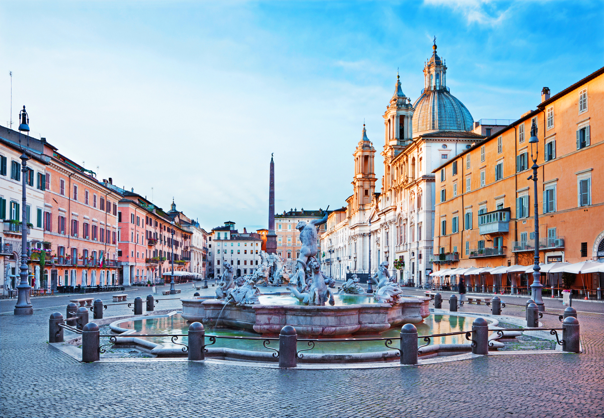

<!doctype html>
<html lang="en">

<head>
  <meta charset="utf-8">
  <meta name="viewport" content="width=device-width, initial-scale=1">
  <title>Piazze di Roma</title>
  <link href="https://cdn.jsdelivr.net/npm/bootstrap@5.3.0-alpha3/dist/css/bootstrap.min.css" rel="stylesheet"
    integrity="sha384-KK94CHFLLe+nY2dmCWGMq91rCGa5gtU4mk92HdvYe+M/SXH301p5ILy+dN9+nJOZ" crossorigin="anonymous">
</head>

</html>

<body>
  <div class="container-fluid">
    <div w3-include-html="menu.html"></div>
    <div class="card my-2 mx-auto" style="max-width: 1280px;" id="popolo">
      <div class="row g-0">
        <div class="col-md-8">
          
        </div>
        <div class="col-md-4">
          <div class="card-body">
            <h2 class="card-title mb-4">Piazza Navona</h2>
            <h4 class="card-subtitle">Roma</h4>
            <p class="card-text fs-6 lh-base p-2">Piazza Navona è una delle piazze più famose di Roma, situata nel centro storico della città. La piazza fu costruita sulla base di un antico stadio romano del I secolo d.C. e fu trasformata in una grande piazza barocca nel XVII secolo. La piazza è nota per le sue tre fontane, tra cui la famosa Fontana dei Quattro Fiumi, progettata dal famoso artista barocco Gian Lorenzo Bernini.</p>
            <p class="card-text fs-6 lh-base p-2">La piazza ha una lunga storia che risale all'epoca romana, quando era conosciuta come Stadium di Domiziano. Durante il Medioevo, la piazza fu utilizzata come mercato e luogo di riunione pubblica. Nel Rinascimento, la piazza fu abbellita con nuove fontane e statue.</p>
          </div>
        </div>
      </div>
    </div>
  </div>
  <script src="import.js"></script>
  <script>includeHTML()</script>
  <script src="https://cdn.jsdelivr.net/npm/bootstrap@5.3.0-alpha3/dist/js/bootstrap.bundle.min.js"
    integrity="sha384-ENjdO4Dr2bkBIFxQpeoTz1HIcje39Wm4jDKdf19U8gI4ddQ3GYNS7NTKfAdVQSZe"
    crossorigin="anonymous"></script>
  <script src="https://cdn.jsdelivr.net/npm/@popperjs/core@2.11.7/dist/umd/popper.min.js"
    integrity="sha384-zYPOMqeu1DAVkHiLqWBUTcbYfZ8osu1Nd6Z89ify25QV9guujx43ITvfi12/QExE"
    crossorigin="anonymous"></script>
</body>

</html>